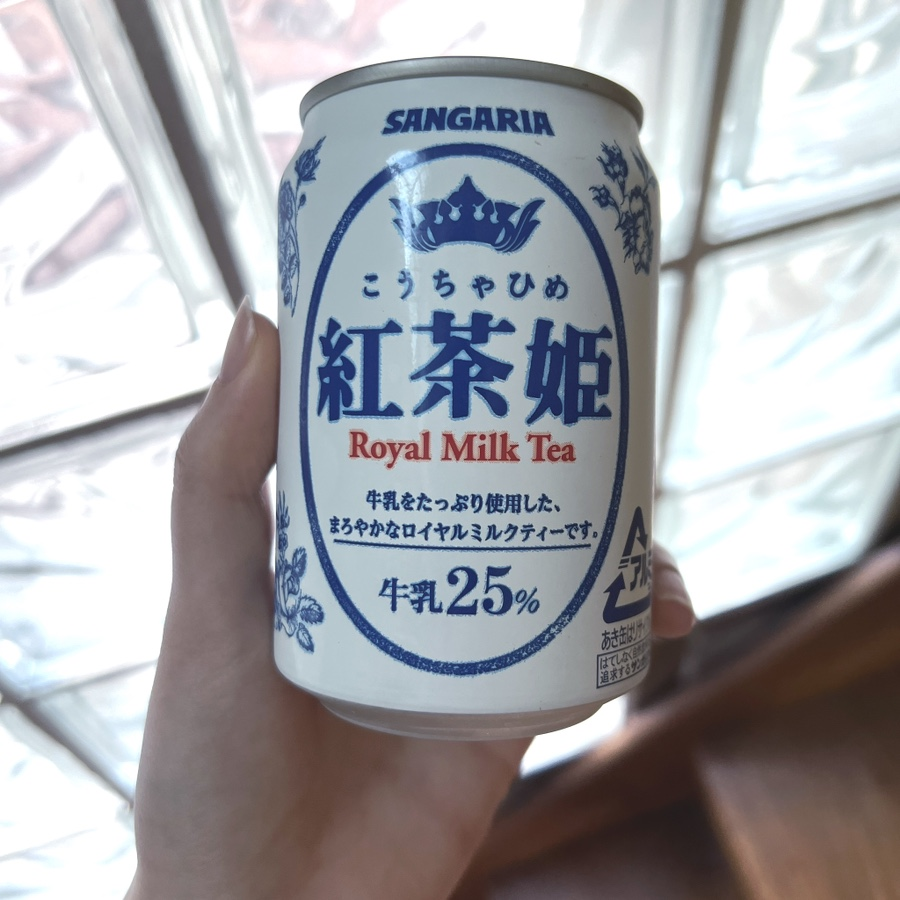

MY STUFFS of this month
최근에 겟한 마음에 드는 물건들.

추천받아서 마켓컬리에서 사먹었는데 '안 달고' 맛있어서 지금 한 10캔 이상 사먹은 밀크티. '안 달고' 가 매우 중요함
드디어 산 일렉기타!!!! 조금씩 연습하고있다..
선물받은 카세트테이프 플레이어 워크맨. 드디어 라나델레이 노먼뻑킹록웰을 재생할 수 있게 되었다 ㅋ
끊어져있던 청금석을 다시 모아서 원석팔찌 만들었다.
new 진공관앰프 + 원래 있던 스피커가 세트마냥 잘 어울림. 블루투스 안테나 연결해서 지금 스포티파이로 노래들으면서 코딩하는중